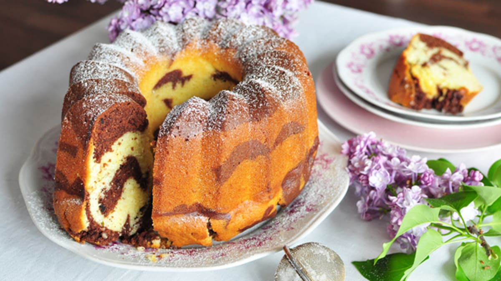

Bábovka

There are countless recipes for bábovka, and every family surely has its own. Maybe several! We have a classic for you in the form of a marble cup cake - it is very easy to prepare!
Ingredients
- 1 cup of sugar
- 2 eggs
- 1/2 cup of oil
- 2 cups of semi-coarse flour
- 1 cup of milk
- Baking powder (kypřicí prášek)
- Vanilla sugar
- Lemon zest
- cocoa
- Mix sugar with eggs, add oil, flour, milk, baking powder, vanilla sugar and mix well.
- Divide the dough into two bowls. In one bowl, add grated lemon peel to taste (preferably organic).
- In another bowl with the dough, add Dutch cocoa to taste as well.
- Pour into a greased mold and bake at 200 °C for 45–50 min.
- After baking, turn it out onto a plate while it is still hot. Slice lukewarm.